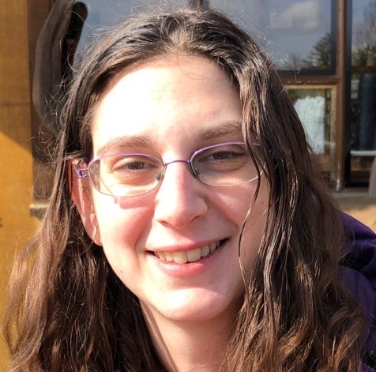

Johanna Blumenthal
This section includes basic information about me, Johanna, Joh or in hebrew Chaya Basha חיה באשא
LinkedInGitHub
HackerRank 
General Bio
I was born in Aurora, CO and raised in Broomfield. I currently live in Longmont with her husband and their poddle, named Penny. I am a licensed attorney in Colorado (Bar # 45150) and practiced family law until 2019 when I decided to take an indefinite break from family law. I am currently a graduate student at Regis University pursing a master's degree in Software Egnieering. My major area of software interest is the creation of responsible tech that aims to maximize the benefit of the technologies humanity has invented while minimizing the harms they may cause. I am an active member of ACM SIGCAS and CSG-ED
About this Site
I am a lover of learning and life. My interests, projects and educaiton are diverse. I have aimed to make a website that reflects my whole self. As such, the educaiton and exerience sections are much longer than what is typically on a linkedIn bio or a resume. This is intentional. I have used headings and the two-column note taking style in an attempt to make it easier to find topics quickly.